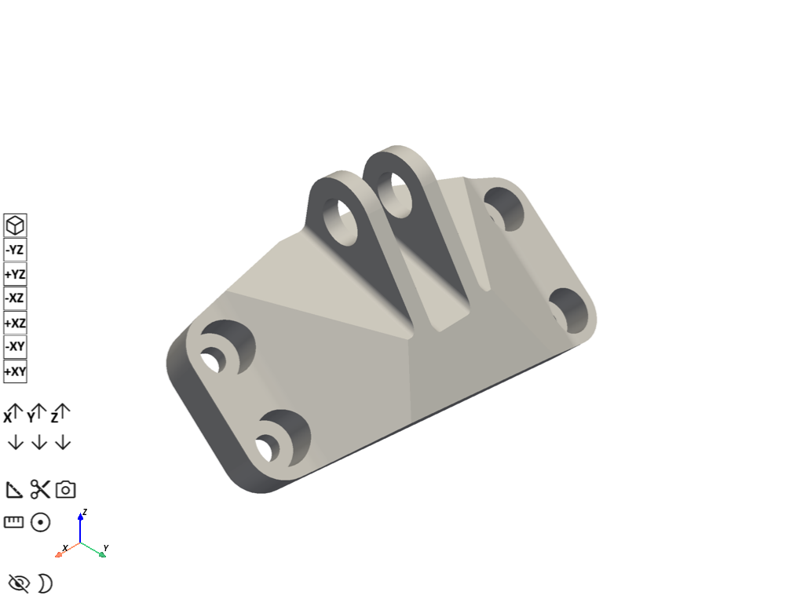

Note
Go to the end to download the full example code.
Shape Optimization of a Bracket#
This example demonstrates how to insert a Static Structural analysis into a new Mechanical session and execute a sequence of Python scripting commands that define and solve a shape optimization analysis of bracket. Scripts then evaluate the following results: deformation and optimized shape.
## %%
# Import the necessary libraries
# ~~~~~~~~~~~~~~~~~~~~~~~~~~~~~~
from pathlib import Path
from typing import TYPE_CHECKING
from ansys.mechanical.core import App
from ansys.mechanical.core.examples import delete_downloads, download_file
from matplotlib import image as mpimg
from matplotlib import pyplot as plt
if TYPE_CHECKING:
import Ansys
Initialize the embedded application#
app = App(globals=globals())
print(app)
Ansys Mechanical [Ansys Mechanical Enterprise]
Product Version:252
Software build date: 06/13/2025 11:25:56
Create functions to set camera and display images#
# Set the path for the output files (images, gifs, mechdat)
output_path = Path.cwd() / "out"
def display_image(
image_path: str,
pyplot_figsize_coordinates: tuple = (16, 9),
plot_xticks: list = [],
plot_yticks: list = [],
plot_axis: str = "off",
) -> None:
"""Display the image with the specified parameters.
Parameters
----------
image_path : str
The path to the image file to display.
pyplot_figsize_coordinates : tuple
The size of the figure in inches (width, height).
plot_xticks : list
The x-ticks to display on the plot.
plot_yticks : list
The y-ticks to display on the plot.
plot_axis : str
The axis visibility setting ('on' or 'off').
"""
# Set the figure size based on the coordinates specified
plt.figure(figsize=pyplot_figsize_coordinates)
# Read the image from the file into an array
image_path = str(output_path / image_path)
plt.imshow(mpimg.imread(image_path))
# Get or set the current tick locations and labels of the x-axis
plt.xticks(plot_xticks)
# Get or set the current tick locations and labels of the y-axis
plt.yticks(plot_yticks)
# Turn off the axis
plt.axis(plot_axis)
# Display the figure
plt.show()
Configure graphics for image export#
# Define the graphics and camera
graphics = app.Graphics
camera = graphics.Camera
# Set the camera orientation to the isometric view and set the camera to fit the model
camera.SetSpecificViewOrientation(ViewOrientationType.Iso)
camera.SetFit()
# Set the image export format and settings
image_export_format = GraphicsImageExportFormat.PNG
settings_720p = Ansys.Mechanical.Graphics.GraphicsImageExportSettings()
settings_720p.Resolution = (
Ansys.Mechanical.DataModel.Enums.GraphicsResolutionType.EnhancedResolution
)
settings_720p.Background = Ansys.Mechanical.DataModel.Enums.GraphicsBackgroundType.White
settings_720p.Width = 1280
settings_720p.Height = 720
settings_720p.CurrentGraphicsDisplay = False
Download the required files#
# Download the geometry file
geometry_path = download_file("bracket_model.agdb", "pymechanical", "embedding")
Import the geometry#
# Define the model
model = app.Model
# Add the geometry import to the geometry import group
geometry_import_group = model.GeometryImportGroup
geometry_import = geometry_import_group.AddGeometryImport()
# Set the geometry import format and settings
geometry_import_format = (
Ansys.Mechanical.DataModel.Enums.GeometryImportPreference.Format.Automatic
)
geometry_import_preferences = Ansys.ACT.Mechanical.Utilities.GeometryImportPreferences()
geometry_import_preferences.ProcessNamedSelections = True
geometry_import_preferences.NamedSelectionKey = ""
geometry_import_preferences.ProcessMaterialProperties = True
geometry_import_preferences.ProcessCoordinateSystems = True
# Import the geometry with the specified settings
geometry_import.Import(
geometry_path, geometry_import_format, geometry_import_preferences
)
# Visualize the model in 3D
app.plot()

[]
Define Named Selections#
Specify variables for named selection objects
NS_GRP = ExtAPI.DataModel.Project.Model.NamedSelections
BOUNDARY_COND_NS = [
x for x in ExtAPI.DataModel.Tree.AllObjects if x.Name == "boundary_cond"
][0]
LOADING_NS = [x for x in ExtAPI.DataModel.Tree.AllObjects if x.Name == "loading"][0]
EXCLUSON_REGION_NS = [
x for x in ExtAPI.DataModel.Tree.AllObjects if x.Name == "exclusion_region"
][0]
BRACKET_NS = [x for x in ExtAPI.DataModel.Tree.AllObjects if x.Name == "bracket"][0]
Define the mesh settings and generate the mesh#
mesh = app.Model.Mesh
automatic_method = mesh.AddAutomaticMethod()
automatic_method.ScopingMethod = GeometryDefineByType.Component
selection = NS_GRP.Children[3]
automatic_method.Location = selection
automatic_method.Method = MethodType.AllTriAllTet
automatic_method.ElementOrder = ElementOrder.Linear
sizing = mesh.AddSizing()
sizing.ScopingMethod = GeometryDefineByType.Component
selection = NS_GRP.Children[3]
sizing.Location = selection
sizing.ElementSize = Quantity(6e-3, "m")
mesh.GenerateMesh()
# Display mesh
app.Tree.Activate([mesh])
camera.SetFit()
graphics.ExportImage(str(output_path / "mesh.png"), image_export_format, settings_720p)
display_image("mesh.png")
Define Analysis#
Add Structural analysis
model = app.Model
static_structural_analysis = model.AddStaticStructuralAnalysis()
Define loads and boundary conditions#
fixed_support = static_structural_analysis.AddFixedSupport()
selection = NS_GRP.Children[0]
fixed_support.Location = selection
force = static_structural_analysis.AddForce()
selection = NS_GRP.Children[1]
force.Location = selection
force.DefineBy = LoadDefineBy.Components
force.ZComponent.Output.SetDiscreteValue(0, Quantity(25000, "N"))
Analysis settings#
solution = static_structural_analysis.Solution
Insert results#
total_deformation = solution.AddTotalDeformation()
Solve#
solution.Solve(True)
solution_status = solution.Status
Show messages#
# Print all messages from Mechanical
app.messages.show()
Severity: Warning
DisplayString: Linear Tetrahedral elements have been used in regions with linear materials. This is not recommended. Please consider changing your mesh settings to use a different element type in these regions.
Severity: Info
DisplayString: The requested license was received from the License Manager after 36 seconds.
Results#
Total deformation
app.Tree.Activate([total_deformation])
camera.SetFit()
graphics.ExportImage(
str(output_path / "total_deformation.png"), image_export_format, settings_720p
)
display_image("total_deformation.png")
Define Analysis#
Add Topology Optimization Analysis
topology_optimization = model.AddTopologyOptimizationAnalysis()
topology_optimization.ImportLoad(static_structural_analysis)
Define Optimization Settings#
Specify the shape optimization region
optimization_region = DataModel.GetObjectsByType(
DataModelObjectCategory.OptimizationRegion
)[0]
selection = NS_GRP.Children[3]
optimization_region.DesignRegionLocation = selection
optimization_region.ExclusionScopingMethod = GeometryDefineByType.Component
selection = NS_GRP.Children[2]
optimization_region.ExclusionRegionLocation = selection
optimization_region.OptimizationType = OptimizationType.Shape
optimization_region.ShapeMoveLimitControl = TopoPropertyControlType.Manual
optimization_region.MorphingIterationMoveLimit = 0.002
optimization_region.MaxCumulatedDisplacementControl = TopoPropertyControlType.Manual
optimization_region.MorphingTotalMoveLimit = 0.02
optimization_region.MeshDeformationToleranceControl = TopoPropertyControlType.Manual
Define Objective#
Specify objective as minimizing volume
objective_type = DataModel.GetObjectsByType(DataModelObjectCategory.Objective)[0]
objective_type.Worksheet.SetObjectiveType(0, ObjectiveType.MinimizeVolume)
Define Compliance Settings#
Specify compliance as response constraint
compliance_constraint = topology_optimization.AddComplianceConstraint()
compliance_constraint.ComplianceLimit.Output.SetDiscreteValue(0, Quantity(0.27, "J"))
mass_constraint = DataModel.GetObjectsByName("Response Constraint")
DataModel.Remove(mass_constraint)
Analysis settings#
topo_solution = topology_optimization.Solution
Insert results#
# Topology_Density = SOLN.AddTopologyDensity()
topology_density = DataModel.GetObjectsByName("Topology Density")[0]
Solve: shape Optimization Simulation#
topo_solution.Solve(True)
topo_solution_status = topo_solution.Status
Show messages#
# Print all messages from Mechanical
app.messages.show()
Severity: Info
DisplayString: For geometric objective (Mass or Volume), it is recommended to use Criterion of the upstream Measure folder (inserted from Model object).
Severity: Warning
DisplayString: Linear Tetrahedral elements have been used in regions with linear materials. This is not recommended. Please consider changing your mesh settings to use a different element type in these regions.
Severity: Info
DisplayString: The requested license was received from the License Manager after 36 seconds.
Results#
Topology Density
app.Tree.Activate([topology_density])
camera.SetFit()
graphics.ExportImage(
str(output_path / "topology_density.png"), image_export_format, settings_720p
)
display_image("topology_density.png")
Cleanup#
Save project
mechdat_file = output_path / "shape-optimization.mechdat"
app.save(str(mechdat_file))
# Close the app
app.close()
# delete example file
delete_downloads()
True
Total running time of the script: (2 minutes 59.863 seconds)